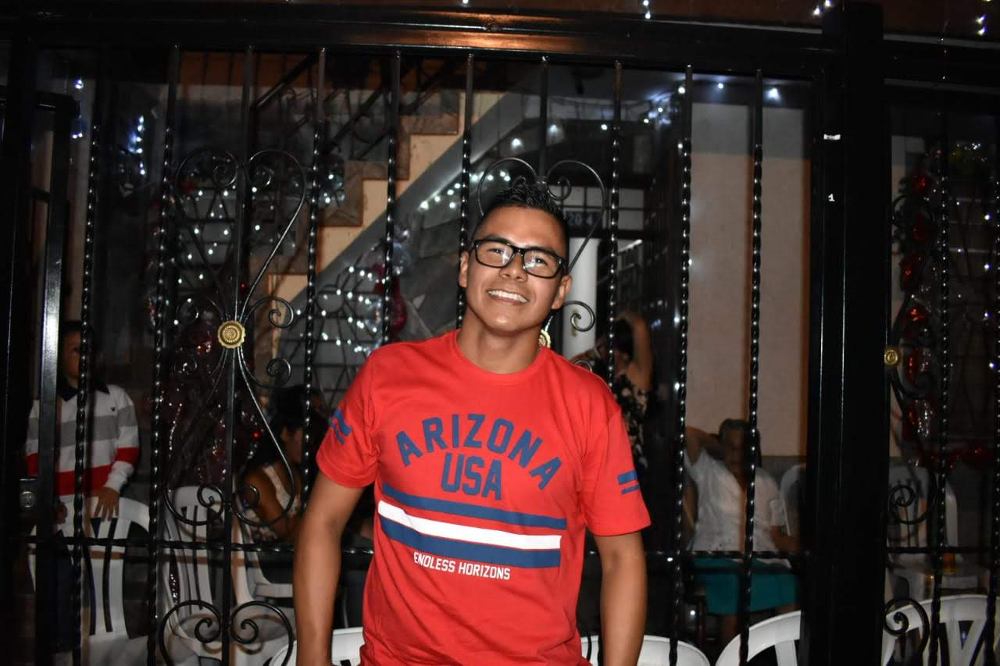

No recuerdo cuando fue la primera vez que tomé un lápiz y comencé a dibujar, pero si recuerdo cuando decidí estudiar diseño y dedicarme a lo que me gustaba, de eso ya han pasado más de 13 años.
Actualmente me dedico a la producción mayormente audiovisual, tanto en el área de grabación de contenido como en la creación de animaciones multimedia en formato 2d o 3d.
